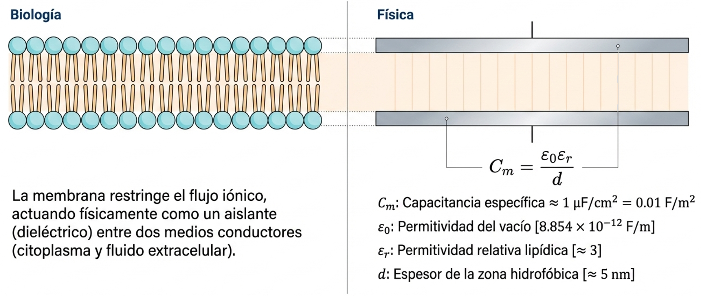

Introducción a la membrana biológica
Estructura molecular, función de barrera y modelo dieléctrico
1 Propósito del módulo
Antes de estudiar la electroporación, es necesario comprender qué tipo de estructura se está perturbando. La membrana celular no es una pared rígida: es una organización molecular dinámica que separa dos medios acuosos conductores y regula selectivamente el intercambio de materia, carga e información.
En este módulo se introduce la membrana biológica como:
- una bicapa lipídica anfipática;
- una barrera selectiva al transporte iónico y molecular;
- una estructura funcional con proteínas y carbohidratos;
- un sistema físico que puede aproximarse como un dieléctrico nanométrico.
2 Fosfolípidos y organización anfipática
Los fosfolípidos son moléculas anfipáticas: poseen una región polar o hidrofílica y una región apolar o hidrofóbica.
La cabeza polar interactúa favorablemente con el agua, mientras que las colas hidrocarbonadas tienden a evitar el contacto con el medio acuoso. Esta propiedad conduce espontáneamente a la formación de bicapas lipídicas en ambientes acuosos.
En una bicapa:
- las cabezas polares se orientan hacia los medios acuosos;
- las colas apolares se orientan hacia el interior;
- la región central hidrofóbica dificulta el paso de iones y moléculas polares;
- la membrana adquiere una función de barrera selectiva.
La Figura 1 resume esta organización en cuatro niveles: el fosfolípido como molécula anfipática, la bicapa lipídica como estructura autoorganizada, la biomembrana funcional con proteínas y carbohidratos, y el transporte selectivo de moléculas a través de la membrana.

3 La bicapa lipídica como barrera selectiva
La bicapa lipídica permite el paso relativamente fácil de algunas moléculas pequeñas y apolares, pero restringe fuertemente el paso de iones, macromoléculas y moléculas polares grandes.
Por esta razón, muchas sustancias requieren proteínas especializadas para atravesar la membrana:
- canales iónicos;
- transportadores;
- bombas;
- receptores acoplados a transporte;
- complejos de señalización.
Desde la perspectiva de la electroporación, esta selectividad es central: el estímulo eléctrico busca aumentar transitoriamente la permeabilidad de una barrera que normalmente impide el paso de muchas moléculas de interés biológico.
4 Proteínas de membrana
Las proteínas de membrana amplían las funciones de la bicapa lipídica. Pueden actuar como:
- canales selectivos para iones;
- transportadores de solutos;
- receptores de señales químicas;
- enzimas asociadas a membrana;
- elementos de adhesión celular;
- puntos de anclaje para el citoesqueleto.
En electroporación, la presencia de proteínas hace que la membrana real sea más compleja que una bicapa lipídica ideal. Sin embargo, para construir los modelos físicos iniciales, resulta útil comenzar con la bicapa como sistema dieléctrico simplificado.
5 Carbohidratos o glúcidos de membrana
Los carbohidratos de membrana, también llamados glúcidos, suelen encontrarse unidos a lípidos y proteínas, formando glicolípidos y glicoproteínas.
Estos componentes participan en:
- reconocimiento celular;
- interacción célula-célula;
- protección de la superficie celular;
- organización del glicocálix;
- respuesta frente al entorno extracelular.
Aunque no son el centro de los modelos básicos de electroporación, los carbohidratos contribuyen a la complejidad físico-química de la superficie celular y pueden influir en la interacción de la membrana con el medio.
6 La membrana como dieléctrico nanométrico
Desde un punto de vista eléctrico, la membrana puede aproximarse como una capa dieléctrica delgada que separa dos medios conductores: el citoplasma y el fluido extracelular.
La Figura 2 muestra la correspondencia física entre la bicapa lipídica y un capacitor de placas plano-paralelas. En esta analogía, la región hidrofóbica central de la membrana actúa como material dieléctrico, mientras que los medios acuosos a ambos lados de la bicapa se comportan como regiones conductoras donde puede acumularse carga interfacial.

Esta representación permite entender por qué la membrana puede acumular carga en sus interfaces y comportarse, en primera aproximación, como un capacitor.
Para una geometría plana ideal, la capacitancia específica de membrana se expresa como:
\[ C_m = \frac{\varepsilon_0 \varepsilon_r}{d} \]
donde:
| Símbolo | Significado | Unidad |
|---|---|---|
| \(C_m\) | capacitancia específica de membrana | \(\mathrm{F/m^2}\) |
| \(\varepsilon_0\) | permitividad del vacío | \(\mathrm{F/m}\) |
| \(\varepsilon_r\) | permitividad relativa efectiva de la región lipídica | adimensional |
| \(d\) | espesor dieléctrico de la bicapa | \(\mathrm{m}\) |
7 Orden de magnitud del campo intramembranal
Si un voltaje transmembrana de aproximadamente \(1~\mathrm{V}\) cae a través de una región hidrofóbica de espesor cercano a \(5~\mathrm{nm}\), el campo intramembranal estimado es:
\[ E_m \approx \frac{V_m}{d} = \frac{1~\mathrm{V}}{5\times 10^{-9}~\mathrm{m}} \approx 2\times 10^8~\mathrm{V/m} \]
Este resultado muestra que una diferencia de potencial aparentemente pequeña puede corresponder a un campo eléctrico muy intenso a escala molecular.
8 Conexión con la electroporación
La electroporación puede entenderse como una perturbación eléctrica de esta barrera dieléctrica molecular.
El campo externo no “rompe” simplemente la membrana como si fuera una lámina macroscópica. Más bien:
- induce una diferencia de potencial adicional;
- polariza la membrana;
- modifica la energía libre asociada a defectos acuosos;
- favorece reorganizaciones lipídicas;
- puede aumentar transitoriamente la permeabilidad.
La Figura 3 resume esta transición de manera esquemática: una membrana inicialmente intacta es expuesta a un campo eléctrico externo; si el estímulo es suficiente, la bicapa puede reorganizarse localmente y formar un poro hidrofílico que permite el paso de especies iónicas o moleculares.

Esta secuencia permite conectar la descripción estructural de la membrana con los modelos físicos que se desarrollan en los módulos siguientes. Primero se estudiará cómo el campo eléctrico induce voltaje transmembrana; luego se analizará la dinámica temporal de carga, la energía libre asociada a la formación del poro y el posible calentamiento por disipación Joule.